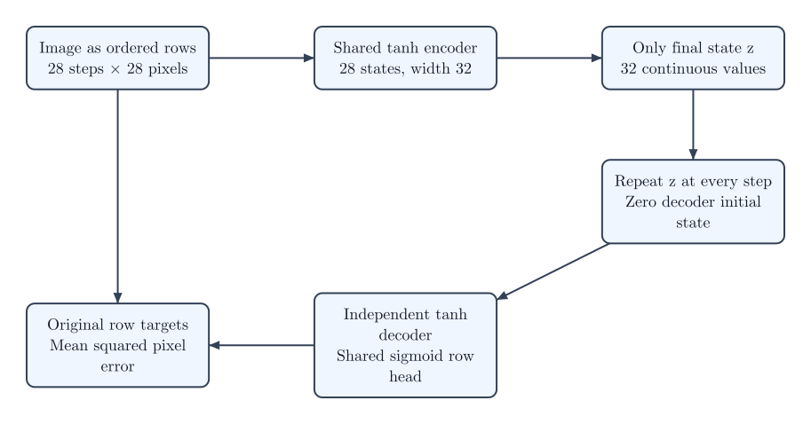
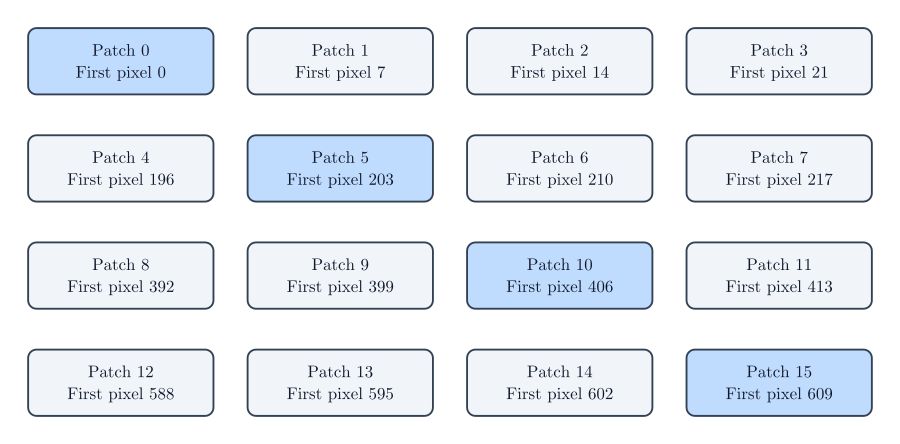
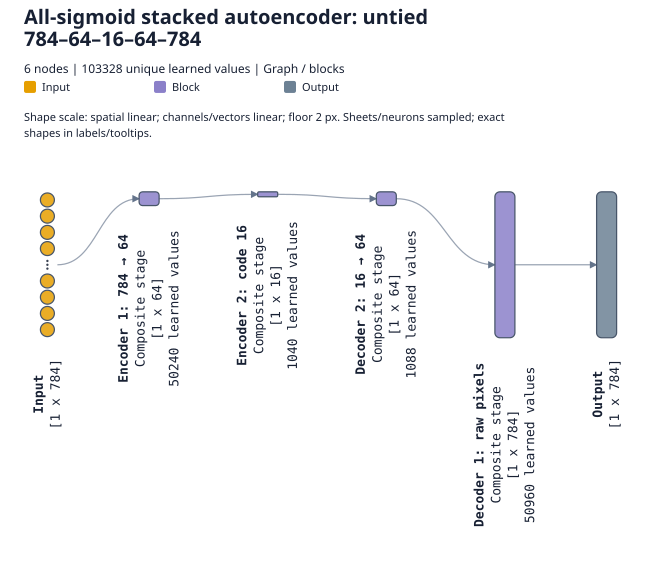
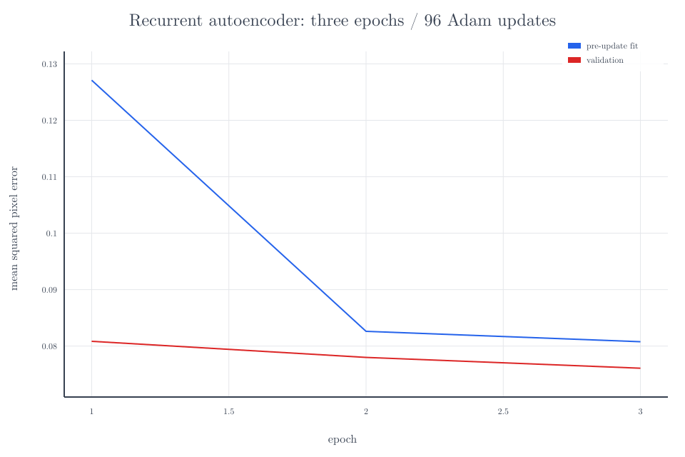
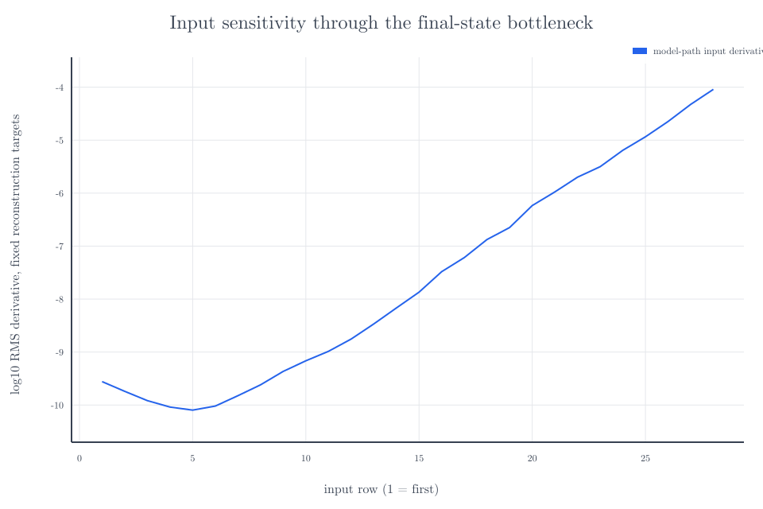
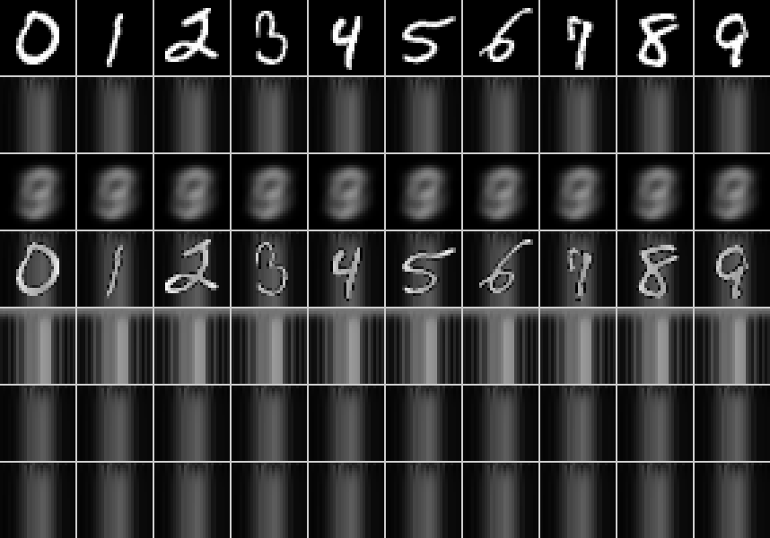

Recurrent Autoencoders: A Final State Must Remember the Image
Abstract
A recurrent autoencoder reconstructs an ordered sequence from a compact final encoder state. Here a MNIST image becomes twenty-eight rows of twenty-eight pixels. A width-32 tanh encoder compresses them into its final state, and an independent decoder receives that same code at every step before projecting each state into a sigmoid pixel row. This report checks the recurrences by hand, derives full backpropagation through both halves, and runs the original 4,956-parameter model for ninety-six explicit Adam updates. Its held-out MSE 0.07988 is worse than the fitting-mean baseline, and shifting codes barely changes the score. State histories, input-gradient profiles and target-free decoding qualify what this short run demonstrates.
One state carries the entire sequence
For row vectors x_t with F features, encoder state h_t and decoder state d_t with U units,
The cells are simple tanh recurrences in the spirit of [Elman (1990)](https://doi.org/10.1207/s15516709cog1402_1). Encoder and decoder weights differ but each set is shared over time. The decoder receives neither target rows, previous target/output pixels, encoder histories nor attention. There is no teacher forcing or state carried between observations/calls. This fixed-length repeated-code architecture is an educational reconstruction model, not a language translation system.
#include <dm/dm.hpp>
int main() {
std::filesystem::create_directories("build");
dm::graphics::Diagram d(54, 1100);
d.node("x", {0, 0}, "Image as ordered rows\n28 steps × 28 pixels")
.node("e", {6, 0}, "Shared tanh encoder\n28 states, width 32")
.node("z", {12, 0}, "Only final state z\n32 continuous values")
.node("r", {12, -3}, "Repeat z at every step\nZero decoder initial state")
.node("d", {6, -6}, "Independent tanh decoder\nShared sigmoid row head")
.node("l", {0, -6}, "Original row targets\nMean squared pixel error")
.edge("x", "e")
.edge("e", "z")
.edge("z", "r")
.edge("r", "d")
.edge("d", "l")
.edge("x", "l")
.save_svg("build/recurrent_method.svg");
}
The canonical models::RecurrentEncode, RecurrentDecode and RecurrentAutoencoder keep every
step differentiable. ImageRowSequence converts NHWC grayscale images or flat rows into ordered
sequences without resizing. The core performs no optimizer updates; complete fitting loops
remain in the report and native Python/R programs. Invalid dimensions, integer/nonfinite inputs
or mismatched store dtypes fail before new leaves are created. Partial encoder/decoder result
fields are explicitly undefined; populated tensor handles own their lifetimes.
Three steps with one state value
Take T=3,F=U=1 and input [0.2,0.4,0.8]. Set encoder weights (W_e,R_e,b_e)=(0.5,0.25,0), decoder weights (W_d,R_d,b_d)=(0.7,0.3,−0.1), and output weights (W_o,b_o)=(1.2,−0.2). For instance h_1=tanh(0.1), h_2=tanh(0.2+0.25h_1), and the decoder starts at \(d_1=\tanh(0.7h_3-0.1)\). Every decoder step uses h_3, not the corresponding input value. The program compares every state and output with these scalar recurrences in Float64.
#include <dm/dm.hpp>
int main() {
namespace n = dm::nn;
const auto type = n::DType::Float64;
const auto x = n::tensor({.2, .4, .8}, {1, 3, 1}, type);
n::ParameterStore p(5, type);
n::models::RecurrentAutoencoder(p, x, 3, 1, 1);
p.unflatten({.5, .25, 0., .7, .3, -.1, 1.2, -.2});
const auto net = n::models::RecurrentAutoencoder(p, x, 3, 1, 1);
double h = 0, d = 0;
std::vector<double> encoder, decoder, prediction, steps{1, 2, 3};
for (double v : {.2, .4, .8}) {
h = std::tanh(.5 * v + .25 * h);
encoder.push_back(h);
}
std::print(
"| step | input | encoder state | decoder state | output |\n|---:|---:|---:|---:|---:|\n");
for (int t = 0; t < 3; ++t) {
d = std::tanh(.7 * h + .3 * d - .1);
const double y = 1 / (1 + std::exp(-(1.2 * d - .2)));
decoder.push_back(d);
prediction.push_back(y);
if (std::abs(net.encoder_states.at({0, t, 0}) - encoder[t]) > 1e-14 ||
std::abs(net.decoder_states.at({0, t, 0}) - d) > 1e-14 ||
std::abs(net.reconstruction.at({0, t, 0}) - y) > 1e-14)
return 1;
std::print(
"| {} | {:.1f} | {:.8f} | {:.8f} | {:.8f} |\n", t + 1, x.at({0, t, 0}), encoder[t], d, y);
}
if (n::max(
n::abs(n::models::RecurrentDecode(p, net.code, 3, 1).reconstruction - net.reconstruction))
.item() != 0)
return 1;
dm::graphics::RPlot::create()
.lines(steps, encoder, "encoder h", {37, 99, 235}, 2.)
.lines(steps, decoder, "decoder d", {22, 163, 74}, 2.)
.lines(steps, prediction, "sigmoid output", {220, 38, 38}, 2.)
.x_label("time step")
.y_label("scalar state / pixel prediction")
.title("Three-step hand example: one final code drives every decoder step")
.save_svg("build/recurrent_toy.svg");
}| step | input | encoder state | decoder state | output |
|---|---|---|---|---|
| 1 | 0.2 | 0.09966799 | 0.19581027 | 0.50874219 |
| 2 | 0.4 | 0.22119953 | 0.25159522 | 0.52545654 |
| 3 | 0.8 | 0.42624575 | 0.26720417 | 0.53012472 |

Full backpropagation through time
Define the output preactivation derivative \(e_t=2(\hat x_t-x_t)\odot\hat x_t\odot(1-\hat x_t)/(BTF)\). For each observation, the decoder preactivation adjoints, followed backwards, satisfy
Then \(\delta^e_T=g_z\odot(1-h_T^2)\), and for t<T, \(\delta^e_t=(\delta^e_{t+1}R_e^\top)\odot(1-h_t^2)\). Shared-weight derivatives sum across both observations and time:
There is no truncated history or detach at the code. Repeated Jacobian products can nevertheless shrink or amplify early input sensitivities. The tanh slope is at most one; for a single example, \(\|\partial h_T/\partial x_t\|\le\|W_e\|\|R_e\|^{T-t}\) in the spectral norm. This bound concerns a fixed network, not a convergence guarantee. A strict final-state bottleneck limits scalar count; continuous Float32 codes do not by themselves define a compressed bitstream.
The executed 4,956-parameter architecture
With F=28,U=32, encoder parameters total FU+U²+U=1,952. Decoder recurrence contributes 2U²+U=2,080 and its shared row projection UF+F=924, giving 4,956 scalars in eight leaves. The count is independent of T because weights are reused. Default work is \(O(BT(FU+U^2))\), with \(O(BTU)\) recurrent histories plus the reconstructed pixels. The block graph below executes all 28 steps in each half for one image, with named encoder and decoder boundaries. It uses Graph style, Blocks detail, linear shape scales, a two-pixel visibility floor, at most six sampled planes and eight sampled neurons. Exact shapes remain in labels; unrolled time is summarized by the two labelled blocks rather than 56 repeated boxes.
#include <dm/dm.hpp>
int main() {
namespace n = dm::nn;
n::ParameterStore p(1871);
n::Module model(
[&](const n::Tensor& x) {
const auto net = n::models::RecurrentAutoencoder(p, x);
n::model_stage("Encoder: 28 shared tanh steps / final state", x, net.code);
return n::model_stage(
"Decoder: 28 repeated-code steps + sigmoid rows", net.code, net.reconstruction);
},
"Final-state-only recurrent autoencoder: shared width-32 cells");
n::ModelPlotOptions options;
options.style = n::ModelPlotStyle::Graph;
options.detail = n::ModelPlotDetail::Blocks;
options.max_neurons = 8;
options.sizing.spatial_scale = n::ModelPlotScale::Linear;
options.sizing.channel_scale = n::ModelPlotScale::Linear;
options.sizing.minimum_extent = 2;
options.sizing.max_planes = 6;
const auto figure = model.plot(n::zeros({1, 28, 28}), options);
if (p.size() != 8 || p.count() != 4956 || figure.parameter_count() != 4956)
return 1;
std::filesystem::create_directories("build");
figure.save_svg("build/recurrent_architecture.svg");
std::print("| parameter | scalars |\n|---|---:|\n");
for (const auto& name : p.names())
std::print("| {} | {} |\n", name, p.at(name).numel());
}| parameter | scalars |
|---|---|
| encoder/Wx | 896 |
| encoder/Wh | 1024 |
| encoder/b | 32 |
| decoder/Wx | 1024 |
| decoder/Wh | 1024 |
| decoder/b | 32 |
| output/W | 896 |
| output/b | 28 |

Original genuine-MNIST pools
Native preparation loads the same balanced 1,000 fitting, 200 validation and 200 test records.
Fitting and validation have disjoint official training IDs; test records come from the official
test split. Float32 NHWC pixels lie in [0,1]. ImageRowSequence views rows without resizing
or reversing them. The source manifest and IDs are retained; labels affect gallery order only.
#include <dm/dm.hpp>
int main() {
namespace n = dm::nn;
std::filesystem::create_directories("build");
const std::filesystem::path cache = dm::datasets::data_home();
dm::datasets::prepare_example_data("mnist-assets", cache.string());
const auto pools = n::models::LoadSaliency(cache / "saliency");
n::NamedTensors data;
std::print("| pool | images | steps | features |\n|---|---:|---:|---:|\n");
for (int split = 0; split < 3; ++split) {
const std::string name = split == 0 ? "fit" : split == 1 ? "validation" : "test";
data.emplace_back(name + "_images", pools[split].images);
data.emplace_back(name + "_source_ids", pools[split].source);
if (split == 2)
data.emplace_back("test_labels", pools[split].labels);
std::print("| {} | {} | 28 | 28 |\n", name, pools[split].images.size(0));
}
n::save_npz("build/recurrent_data.npz", data);
std::filesystem::copy_file(
cache / "saliency" / "manifest.json",
"build/recurrent_data_manifest.json",
std::filesystem::copy_options::overwrite_existing);
}| pool | images | steps | features |
|---|---|---|---|
| fit | 1000 | 28 | 28 |
| validation | 200 | 28 | 28 |
| test | 200 | 28 | 28 |
Three epochs with explicit Adam updates
Seed 1871 initializes the eight leaves with the source's cell/projection initializers. Adam uses learning rate 0.003, moments 0.9/0.999 and epsilon 1e-8. Batch seed 1873, batch size 32 and a final batch of eight give 32 updates per epoch and 96 in total. Each record appears once per epoch. Every encoder and decoder step participates in the gradient. Validation MSE accumulated in Float64 from Float32 predictions selects the checkpoint; held-out pixels do not influence selection. Training values are pre-update batch means, while validation uses post-epoch weights. Initial weights/outputs, first gradients/batch/update, every epoch and selected weights are saved.
#include <dm/dm.hpp>
int main() {
namespace n = dm::nn;
std::map<std::string, n::Tensor> data;
for (const auto& [name, value] : n::load_npz("build/recurrent_data.npz"))
data.emplace(name, value);
const auto fit = n::models::ImageRowSequence(data.at("fit_images")),
validation = n::models::ImageRowSequence(data.at("validation_images")),
test = n::models::ImageRowSequence(data.at("test_images"));
n::ParameterStore p(1871);
{
n::NoGradGuard guard;
n::models::RecurrentAutoencoder(p, n::zeros({1, 28, 28}));
p.save("build/recurrent_initial.npz");
const auto initial = n::models::RecurrentAutoencoder(p, test);
n::save_npz(
"build/recurrent_initial_outputs.npz",
{{"code", initial.code}, {"reconstruction", initial.reconstruction}});
}
n::OptimizerConfig config;
config.kind = n::OptimizerKind::Adam;
n::Optimizer optimizer(p, .003, config);
n::BatchOrder batches(1000, 32, 1873);
const auto source = data.at("fit_source_ids").to_vector<int>();
std::ofstream order("build/recurrent_batches.tsv");
order << "epoch\tstep\trow\tsource_id\n";
double best = std::numeric_limits<double>::infinity();
int selected = 0, updates = 0;
std::vector<double> epochs, train, valid;
std::print("| epoch | fitting pre-update MSE | validation MSE |\n|---:|---:|---:|\n");
for (int epoch = 1; epoch <= 3; ++epoch) {
batches.begin_epoch();
double total = 0;
int seen = 0;
for (;;) {
const auto rows = batches.next();
if (rows.empty())
break;
const auto sequence = n::take_rows(fit, rows);
const auto net = n::models::RecurrentAutoencoder(p, sequence);
const auto objective = n::mse(net.reconstruction, sequence);
if (updates == 0) {
n::GradOptions keep;
keep.retain_graph = true;
const auto gradients = n::grad(objective, p.parameters(), keep);
n::NamedTensors saved;
for (std::size_t i = 0; i < gradients.size(); ++i) {
const double norm = n::sqrt(n::sum(n::square(gradients[i]))).item();
if (!std::isfinite(norm) || norm <= 0)
return 1;
saved.emplace_back(p.names()[i], gradients[i]);
}
n::save_npz("build/recurrent_first_gradients.npz", saved);
n::save_npz(
"build/recurrent_first_batch.npz",
{{"images", sequence.reshape({sequence.size(0), 28, 28, 1})}});
}
const double value = objective.item();
if (!std::isfinite(value) || value < 0)
return 1;
optimizer.minimize(objective);
total += rows.size() * value;
seen += int(rows.size());
for (auto row : rows)
order << epoch << '\t' << updates << '\t' << row << '\t' << source[row] << '\n';
if (updates == 0)
p.save("build/recurrent_first_update.npz");
++updates;
}
n::NoGradGuard guard;
const auto net = n::models::RecurrentAutoencoder(p, validation);
const double score =
n::mse(
n::cast(net.reconstruction, n::DType::Float64), n::cast(validation, n::DType::Float64))
.item();
if (seen != 1000 || !std::isfinite(score))
return 1;
p.save("build/recurrent_epoch" + std::to_string(epoch) + ".npz");
if (score < best) {
best = score;
selected = epoch;
p.save("build/recurrent_best.npz");
}
epochs.push_back(epoch);
train.push_back(total / seen);
valid.push_back(score);
std::print("| {} | {:.9f} | {:.9f} |\n", epoch, total / seen, score);
}
if (updates != 96 || !order)
return 1;
n::save_npz(
"build/recurrent_selection.npz",
{{"epoch", n::full({}, selected, n::DType::Int32)},
{"validation_mse", n::full({}, best, n::DType::Float64)}});
dm::graphics::RPlot::create()
.lines(epochs, train, "pre-update fit", {37, 99, 235}, 2.)
.lines(epochs, valid, "validation", {220, 38, 38}, 2.)
.x_label("epoch")
.y_label("mean squared pixel error")
.title("Recurrent autoencoder: three epochs / 96 Adam updates")
.save_svg("build/recurrent_learning.svg");
std::print(
"Selected epoch {}; {} updates; all eight first parameter gradients finite and nonzero.\n",
selected,
updates);
}| epoch | fitting pre-update MSE | validation MSE |
|---|---|---|
| 1 | 0.127108913 | 0.080842366 |
| 2 | 0.082610521 | 0.077990791 |
| 3 | 0.080771579 | 0.076076347 |
Selected epoch 3; 96 updates; all eight first parameter gradients finite and nonzero.

Fresh restoration and code controls
A fresh store restores the selected checkpoint. Standalone decoding sees only z; exact repeat and full-model/decode agreement are checked, along with single-versus-batch agreement within 1e-6 and immutable weights. Zero codes remove the encoder state; cyclically shifted codes misalign it with the target. Reversed input rows deliberately disrupt ordered content while output positions and the original scoring target stay unchanged. This is not an equivalent reconstruction task or a training-time augmentation. The fitting-only pixel mean is a constant baseline computed without validation/test pixels. All controls use frozen decoder weights.
#include <dm/dm.hpp>
int main() {
namespace n = dm::nn;
std::map<std::string, n::Tensor> data;
for (const auto& [name, value] : n::load_npz("build/recurrent_data.npz"))
data.emplace(name, value);
n::ParameterStore p(1871);
p.load("build/recurrent_best.npz", false);
const auto before = p.flatten();
n::NoGradGuard guard;
n::NamedTensors outputs;
for (const auto& name : {"fit", "validation", "test"}) {
const auto net = n::models::RecurrentAutoencoder(
p, n::models::ImageRowSequence(data.at(std::string(name) + "_images")));
outputs.emplace_back(std::string(name) + "_code", net.code);
outputs.emplace_back(std::string(name) + "_reconstruction", net.reconstruction);
}
const auto test = n::models::ImageRowSequence(data.at("test_images"));
const auto net = n::models::RecurrentAutoencoder(p, test),
repeat = n::models::RecurrentAutoencoder(p, test);
if (n::max(n::abs(repeat.reconstruction - net.reconstruction)).item() != 0 ||
n::max(n::abs(n::models::RecurrentDecode(p, net.code).reconstruction - net.reconstruction))
.item() != 0)
return 1;
const auto zero = n::models::RecurrentDecode(p, n::zeros({200, 32}));
const auto shifted = n::models::RecurrentDecode(
p, n::concat({n::slice_axis(net.code, 0, 1, 200), n::slice_axis(net.code, 0, 0, 1)}, 0));
std::vector<std::int64_t> rows(28);
for (int t = 0; t < 28; ++t)
rows[t] = 27 - t;
const auto reversed = n::models::RecurrentAutoencoder(
p, n::gather(test, n::from_vector(rows, {28}), 1).contiguous());
outputs.insert(
outputs.end(),
{{"zero_reconstruction", zero.reconstruction},
{"shuffled_reconstruction", shifted.reconstruction},
{"reversed_code", reversed.code},
{"reversed_reconstruction", reversed.reconstruction}});
n::save_npz("build/recurrent_outputs.npz", outputs);
p.save("build/recurrent_model_arrays.npz");
const auto images = n::take_rows(data.at("test_images"), {0, 1, 2, 3, 4, 5, 6, 7});
const auto probe = n::models::RecurrentAutoencoder(p, n::models::ImageRowSequence(images));
n::save_npz(
"build/recurrent_states.npz",
{{"images", images},
{"encoder_states", probe.encoder_states},
{"decoder_states", probe.decoder_states}});
const auto single = n::models::RecurrentAutoencoder(p, n::take_rows(test, {0}));
const double single_error =
n::max(n::abs(single.reconstruction - n::take_rows(net.reconstruction, {0}))).item();
if (single_error > 1e-6 || before != p.flatten())
return 1;
const auto mean = n::broadcast_to(
n::cast(
n::mean(n::cast(data.at("fit_images"), n::DType::Float64), {0}, true), n::DType::Float32),
data.at("test_images").shape());
n::save_npz("build/recurrent_mean.npz", {{"mean", mean}});
std::print("| reconstruction | held-out MSE against original order |\n|---|---:|\n");
for (const auto& [name, prediction] : n::NamedTensors{
{"model", net.reconstruction},
{"zero code", zero.reconstruction},
{"shifted code", shifted.reconstruction},
{"reversed encoder rows", reversed.reconstruction},
{"fitting pixel mean", mean.reshape({200, 28, 28})}})
std::print(
"| {} | {:.9f} |\n",
name,
n::mse(n::cast(prediction, n::DType::Float64), n::cast(test, n::DType::Float64)).item());
std::print(
"Single/batch max error {:.9g}; fresh restore, exact repeat/decode and immutable weights "
"pass.\n",
single_error);
}| reconstruction | held-out MSE against original order |
|---|---|
| model | 0.079884621 |
| zero code | 0.112504660 |
| shifted code | 0.079947607 |
| reversed encoder rows | 0.079941284 |
| fitting pixel mean | 0.067798074 |
Single/batch max error 0; fresh restore, exact repeat/decode and immutable weights pass.
The model's original test MSE is0.07988; zero codes give 0.11250 and shifted codes 0.07995. The fitting mean is about 0.06780, lower than the learned model. Thus this short run does not beat a constant fitting-mean predictor, and little of its average error depends on correct code alignment. A 32-value state can carry input information without retaining enough useful digit identity for reconstruction. These are one-seed results, not evidence of convergence or a classification/compression result. No classification confusion matrix applies to pixel MSE.
How far does the gradient travel
The encoder-state and decoder-state archives retain every time step for the first eight held-out records. This diagnostic differentiates reconstruction MSE with respect to those input rows, *holding targets fixed*. Detaching the target is essential here: otherwise a second direct target derivative would be added to the model-path derivative. The plotted RMS averages squared input derivatives over the eight records and twenty-eight features for each row. Earlier rows can have smaller sensitivities because their effect passes through more recurrent Jacobians; the measurements describe these weights and records, not a universal monotonic law. The vertical axis uses log10: a unit is a tenfold difference. Here first-row RMS is 2.77e-10 versus 9.11e-5 for the last, about 3.04e-6 as large.
#include <dm/dm.hpp>
int main() {
namespace n = dm::nn;
n::ParameterStore p(1871);
p.load("build/recurrent_best.npz", false);
std::map<std::string, n::Tensor> saved;
for (const auto& [name, value] : n::load_npz("build/recurrent_states.npz"))
saved.emplace(name, value);
const auto input = n::models::ImageRowSequence(saved.at("images")).detach().requires_grad_();
const auto net = n::models::RecurrentAutoencoder(p, input);
const auto objective = n::mse(net.reconstruction, input.detach());
const auto derivative = n::grad(objective, {input})[0];
const auto rms = n::sqrt(n::mean(n::square(n::cast(derivative, n::DType::Float64)), {0, 2}));
const auto norm = rms.to_vector<double>();
std::vector<double> steps(28);
std::iota(steps.begin(), steps.end(), 1.);
if (!std::all_of(norm.begin(), norm.end(), [](double v) { return std::isfinite(v) && v > 0; }))
return 1;
n::save_npz(
"build/recurrent_input_gradients.npz",
{{"images", saved.at("images")}, {"gradient", derivative}, {"row_rms", rms}});
dm::graphics::RPlot::create()
.lines(
steps,
(n::log(rms) / std::log(10.)).to_vector<double>(),
"model-path input derivative",
{37, 99, 235},
2.)
.x_label("input row (1 = first)")
.y_label("log10 RMS derivative, fixed reconstruction targets")
.title("Input sensitivity through the final-state bottleneck")
.save_svg("build/recurrent_gradients.svg");
std::print(
"First-row RMS {:.9g}; last-row RMS {:.9g}. All 28 rows have finite nonzero model-path "
"gradients.\n",
norm.front(),
norm.back());
}First-row RMS 2.76718874e-10; last-row RMS 9.1098557e-05. All 28 rows have finite nonzero model-path gradients.

Reconstructions in a fixed display scale
The first held-out occurrence of each digit 0–9 defines one column, without quality filtering. Rows are clean image, reconstruction, fitting mean, absolute error, zero-code decoder, shifted-code decoder and reversed-input reconstruction. Every row uses [0,1] grayscale, nearest-neighbour enlargement and no error amplification. Decoder outputs are raw predictions; there is no copied-pixel display composite. Reversing rows changes only encoder inputs in that control, not the clean image in the first row or the target used in the table.
#include <dm/dm.hpp>
int main() {
namespace n = dm::nn;
std::map<std::string, n::Tensor> data, out;
for (const auto& [key, value] : n::load_npz("build/recurrent_data.npz"))
data.emplace(key, value);
for (const auto& [key, value] : n::load_npz("build/recurrent_outputs.npz"))
out.emplace(key, value);
const auto mean = n::load_npz("build/recurrent_mean.npz")[0].second;
const auto clean = data.at("test_images").reshape({200, 28, 28});
const auto labels = data.at("test_labels").to_vector<int>(),
ids = data.at("test_source_ids").to_vector<int>();
std::vector<std::int64_t> rows;
std::print("| digit | original MNIST source ID |\n|---:|---:|\n");
for (int digit = 0; digit < 10; ++digit) {
const auto found = std::find(labels.begin(), labels.end(), digit);
if (found == labels.end())
return 1;
rows.push_back(found - labels.begin());
std::print("| {} | {} |\n", digit, ids[rows.back()]);
}
std::vector<n::Tensor> panels;
for (const auto& values : std::vector<n::Tensor>{
clean,
out.at("test_reconstruction"),
mean.reshape({200, 28, 28}),
n::abs(out.at("test_reconstruction") - clean),
out.at("zero_reconstruction"),
out.at("shuffled_reconstruction"),
out.at("reversed_reconstruction")})
panels.push_back(n::take_rows(values, rows));
n::save_image_grid(
n::concat(panels, 0).reshape({70, 28, 28, 1}),
"build/recurrent_reconstructions.png",
10,
0,
1,
2,
.8,
3);
}| digit | original MNIST source ID |
|---|---|
| 0 | 66921 |
| 1 | 63380 |
| 2 | 68936 |
| 3 | 62280 |
| 4 | 62094 |
| 5 | 65222 |
| 6 | 61209 |
| 7 | 61721 |
| 8 | 69402 |
| 9 | 62570 |

Verification and limits
The C++ core is canonical for sequence conversion, shared recurrent components and independent
decoding; Python/R facades forward to the same functions and retain explicit experiment loops.
Native tests check a scalar hand example, all parameters and inputs of a small Float64 model by
finite differences, second derivatives, strict bottleneck validation, owning handles and the
original eight-leaf census. Saved arrays retain complete histories and the initial, first-update,
epoch and selected models for independent comparison. All source arrays in thirteen report archives agree by shape, dtype
and every value byte with the saved original. The same thirteen source archives agree across
normal C++, Python and R workflows. An optional NumPy oracle
(scripts/check_recurrent_autoencoder.py) checks all 4,956 first parameter derivatives
(maximum difference 2.0e-9), bit-exact first Adam updates, 1,724,800 prediction pixels
(maximum difference 1.1e-6 overall; 1.9e-7 at selected weights), 14,336 state-history values and all 6,272 fixed-target input
derivatives (maximum difference 1.7e-10). It does not prepare data or replace the optimizer loop. Full unrolling establishes a gradient
path through all time steps; it does not guarantee that a short optimizer run will learn an
adequate final-state representation. The mean and shifted-code controls make that limitation
visible in this particular experiment.
References
- J. L. Elman (1990), [Finding Structure in Time](https://doi.org/10.1207/s15516709cog1402_1), Cognitive Science 14,179–211. Simple recurrent context motivates the cell, not this specific MNIST experiment.
- P. J. Werbos (1990), [Backpropagation through time: what it does and how to do it](https://doi.org/10.1109/5.58337), Proceedings of the IEEE 78(10),1550–1560. This implementation retains the full finite unroll.
- Y. LeCun, C. Cortes and C. J. C. Burges, [MNIST handwritten digit database](https://yann.lecun.com/exdb/mnist/). The native manifest records source files and selected official IDs.